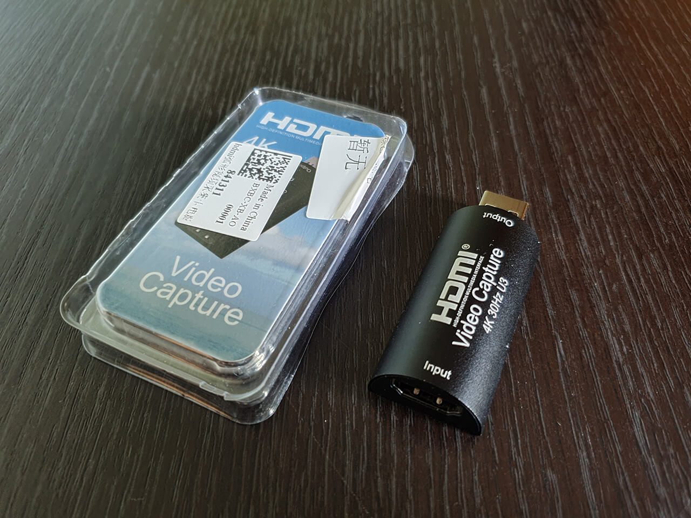
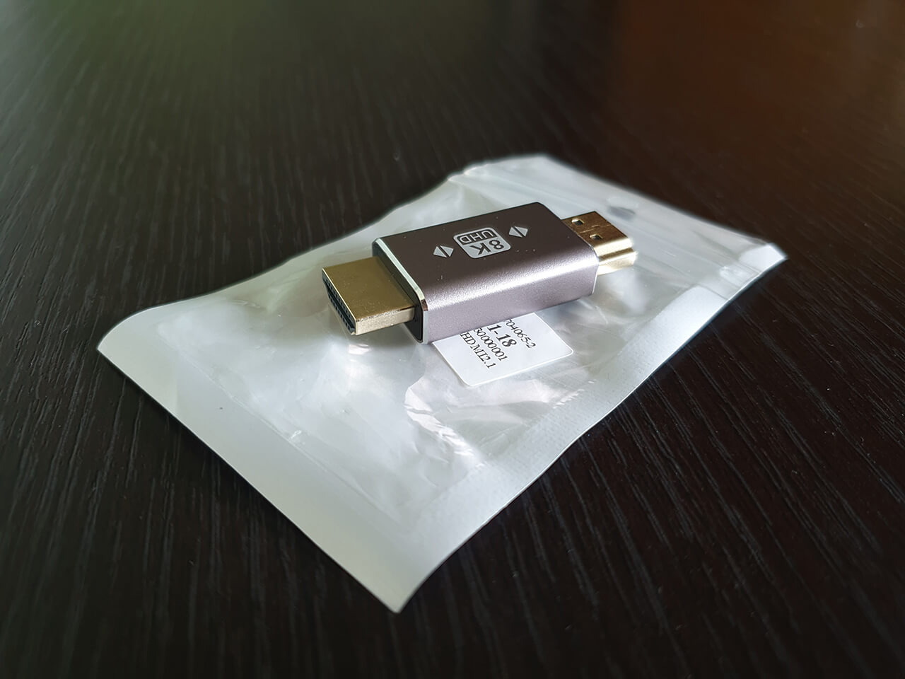
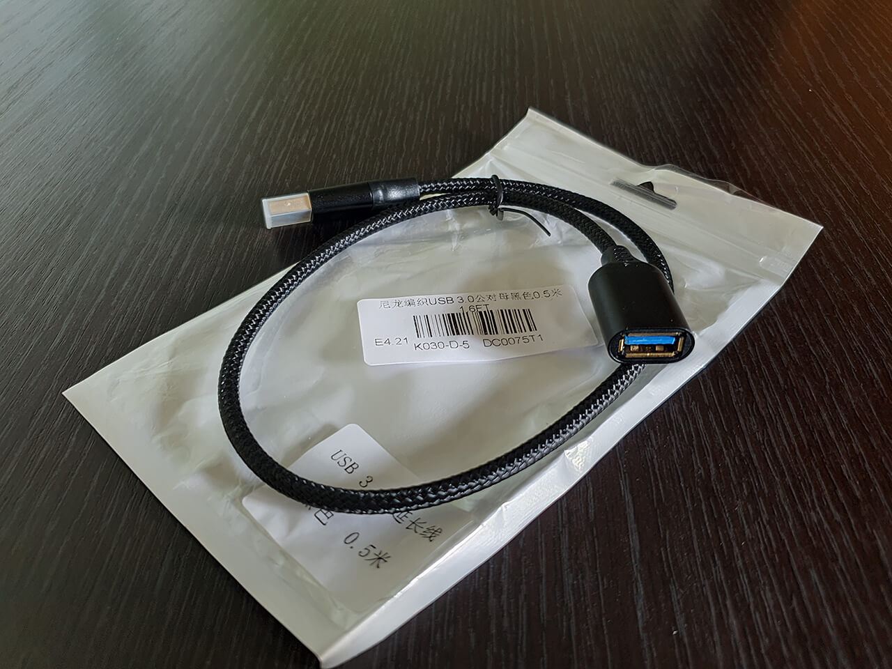

As in the case of an HDMI splitter, there are many types of USB capture cards, from the most budgetary ones based on the MS2109 chip (about $5), and much more expensive. The HyperHDR author's blog has an article in which he describes his experience use of different capture cards in different price categories (link).
For myself, I chose the following capture card model based on the new MS2130 chip (link)

For the project, many users use a simpler MS2109 capture card, but in this case me need to was to have support for the Usb 3.0 standard and full support for 1080/60Hz. The above cheaper capture card did not have this characteristics.
The capture card uses an HDMI socket ("Female" type) as an input. To connect this card to an HDMI splitter either must be used an HDMI cable or an HDMI adapter ("Male-to-Male" type). I was more comfortable with the second option for which the appropriate adapter was purchased (link)

To connect the output from the capture card to the Raspberry Pi, I purchased a short Usb 3.0 extension cable (link)
